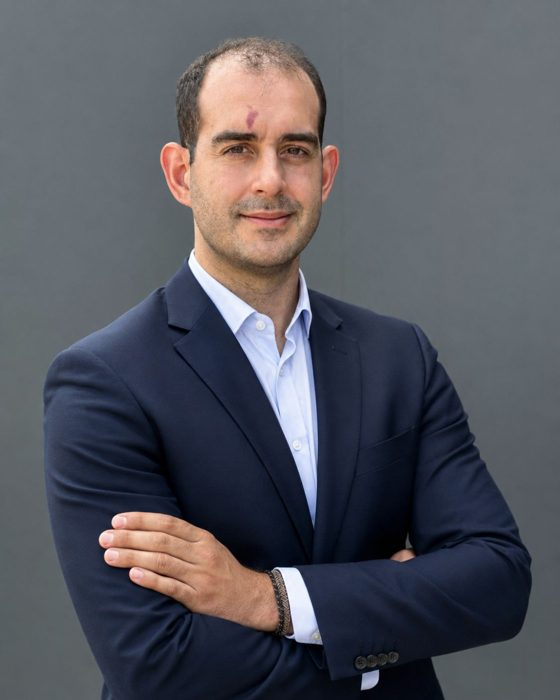

Hallo, ich bin Luis.
Schon als Kind wollte ich verstehen, wie Dinge funktionieren, und sie nutzen, um das Leben leichter zu machen. Angefangen hat es mit Flugzeugen und Motoren, heute mache ich es mit künstlicher Intelligenz. Hier schreibe ich darüber, was ich lerne, wenn ich KI nutze, um besser zu arbeiten: was funktioniert, was nicht und wie ich es mache.
Neu im BlogEin KI-Gesandter für jedes Team
Alles begann mit dem Auseinanderschrauben
Als Kind haben mich Maschinen fasziniert. Flugzeuge, Motoren, jedes Gerät, das ich in die Finger bekam und aufmachen konnte, um zu sehen, was drin ist. Ich habe gern Dinge repariert, und fast noch lieber verstanden, warum sie funktionieren.
Mit Computern war es genauso. Sie nur zu benutzen, reichte mir nicht: Ich wollte wissen, wie sie denken und was ich mit ihnen machen kann. Schon früh war mir eine Idee klar, die mich bis heute begleitet: Technik lohnt sich, wenn sie jemandem das Leben leichter macht.
Diese Neugier hat mich von der Entwicklung von Elektroautos zur Digitalisierung von Kampfflugzeugprogrammen geführt, und von dort zum Aufbau eines KI-nativen Unternehmens von Grund auf. Heute ist künstliche Intelligenz meine neue Maschine zum Auseinanderschrauben. Diese Seite ist mein Werkstattheft: Hier teile ich, was ich lerne, mit echten Beispielen, für alle, die mitlernen wollen.
Ich spreche Spanisch, Englisch und Deutsch. Wenn ich nicht am Rechner sitze, bin ich mit dem Mountainbike unterwegs, beim Schwimmen oder restauriere zu Hause ein altes Fahrrad.
Von Maschinen zu Menschen
-
2011 — 2020
Verstehen, wie ein Flugzeug fliegt
Valencia und MünchenIch habe Luft- und Raumfahrttechnik an der Universitat Politècnica de València studiert und danach den Master an der Technischen Universität München gemacht. Meine Abschlussarbeiten handelten von Raketenantrieben und später, bei Rolls-Royce, vom elektrischen Flugzeugantrieb. Immer noch das Kind, das Flugzeuge liebt, nur mit deutlich mehr Mathematik.
-
2016 — 2018
Meine ersten echten Maschinen
BMW Group · MünchenBei BMW habe ich Antriebs- und Batteriesysteme für Elektroautos konstruiert. Endlich habe ich Geräte nicht mehr nur aufgemacht, sondern gebaut. Dort habe ich gelernt, dass das beste Bauteil nichts nützt, wenn der Prozess drumherum nicht funktioniert.
-
2021 — 2024
Anderen die Arbeit leichter machen
MEWS Partners, Panavia und Eurofighter · MünchenMeine Neugier verlagerte sich von den Maschinen zu der Frage, wie Menschen mit ihnen arbeiten. In den Programmen Tornado und Eurofighter habe ich zusammen mit der NATO digitale Werkzeuge vorangetrieben, in einem Umfeld, in dem jedes Dokument zählt. Wir haben die digitale Signatur ins sichere NATO-Netz gebracht, und Freigaben wurden 60 % schneller. Wir haben eine Software eingeführt, die 25 Ingenieuren 30 % ihrer Zeit gespart hat. Am meisten bedeutet haben mir nicht die Zahlen, sondern zu sehen, wie Kolleginnen und Kollegen diese Zeit für das genutzt haben, was ihnen wirklich wichtig war.
-
2023 — 2025
Das Unternehmen von oben sehen
IESE Business School · Executive MBANeben meiner Arbeit bei Eurofighter habe ich den Executive MBA am IESE gemacht. Ich wollte Unternehmen so gut verstehen wie einen Motor.
-
2025 — 2026
Mit KI etwas von Grund auf aufbauen
Laborai · KI-natives Fintech · MadridIch war Gründungs-COO eines Startups, das Menschen mit KI zu Steuern und Finanzen berät. Wir haben ein Team von 25 Personen aufgebaut und in einem Jahr 120.000 Kunden erreicht. Es war meine erste große KI-Werkstatt: Wir haben interne Werkzeuge gebaut, die dem Team Routinearbeit abgenommen haben, damit es sich auf die Fälle konzentrieren konnte, die einen Menschen brauchten. Dieselbe Idee wie immer: Technik nutzen, um jemandem das Leben leichter zu machen.
Lieber die formelle Version mit allen Daten und Zahlen? Die gibt es auf meinem LinkedIn.
Was ich mit KI lerne
Zu diesem Thema gibt es noch keine Artikel.
-
23. Okt. 2026
Neu
Ein KI-Gesandter für jedes Team
Am meisten bremst nicht die Technik, sondern das Warten auf andere Teams. Eine Idee, auf die ich gestoßen bin: Jedes Team bekommt einen KI-Agenten, der seine Zusagen im Blick behält. Das ist meine Sicht.
KI-Agenten · Teams · Prognosen -
22. Okt. 2026
Beschäftigt sein ist kein Verdienst mehr
Ein Kontakt, der in der KI arbeitet, meint, dass beschäftigte Menschen die großen Verlierer dieser Ära sein werden. Ich stimme zu, und das erwarte ich für die nächsten Monate.
Führung · Produktivität · Prognosen - Demnächst
Vom Eurofighter zum KI-nativen Fintech
Was sich ähnelt und was nicht, wenn man ein NATO-Programm digitalisiert oder Operations von null aufbaut.
Idee - Demnächst
Skalieren oder stoppen: Entscheiden mit KPIs
Wie wir den Test-and-Learn-Zyklus in einem Startup organisiert haben, das jede Woche gewachsen ist.
Idee
Lass uns reden
Wenn dir etwas, das ich schreibe, weiterhilft oder du eine Idee besprechen möchtest, schreib mir auf LinkedIn. Ich antworte allen.